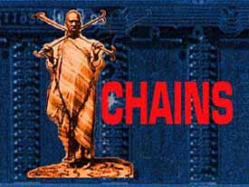

|

about |
This installation grows from the collaboration of
African and American artists
who have forged a new form to expose the post-modern context of
tradition in the omni-present midst of multinational capitalism. The
romantic notion of timeless tradition in isolation from modern society
is long dead.
And we will bring it to you. |
CHAINS Web is the second public manifestation of Coded Messages: CHAINS. CHAINS began as a group of performances in Ghana in 1994. The remote village of Anyako, the historic slave trade castle at Cape Coast, the University of Ghana at Legon, the international Pan African Historical Theatre Festival (PANAFEST) -- all hosted our performances. From the live performances which gave Africans a fresh perspective on the "CHAINS of cybernet economy," and the historical role of tradition in social transformation, to this installation on the so-called World Wide Web, CHAINS juxtaposes sides of the singular context which are otherwise hidden from each other.